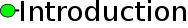
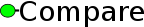
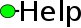

|
 |  |  | ||
| History: Development version online | |||||
|
The information below is both a tutorial and a description of of the webserver. Tooltips are positioned at critical junctions in the workflow, please use them as well. The purpose of the webserver is described on the introduction page. There are 2 sample buttons labeled cm vs Rfam - demo and cm vs cm - demo. The first button supplies the server with the tRNA-family covariance model (cm), while the second button automatically submits the 6 covariance models representing the member families of the tRNA-clan. You can jump directly to the result pages: cm vs Rfam, cm vs cm. These 2 examples will also be used in the text below. Stockholm format alignments are converted to covariance models by CMbuild as first step. They are then compared as covariance models and all the steps of processing and output are similar. The results for the Rfam tRNA(RF00005)-seed alignment and the set of tRNA(RF00005), tRNA-Sec(RF01852), cyano_tmRNA(RF01851) - seed alignments can be found here: RF00005, RF00005,RF01852,RF01851. As the procedure is the same as for covariance models, they are not discussed separately. It is possible to upload a file containing both covariance models and stockholm alignments. A score distribution, containing the CMCompare results of all Rfam models vs all Rfam models, can be found here: .png,.eps . A html table (warning: 160Mbyte) showing all pairwise link scores and a corresponding .csv are also available. Comparing the model with itself gives the highest possible Link score for this model. The Link scores in the .html table are color coded in the same way as the linkscore output matrix below.
Content: If you have additional suggestions, questions or comments please do not hesitate to contact us. The first step is to choose one of the 2 types of comparison offered by CMCws (see Figure 1) and upload a set of models (Figure 2).
Type 1: covariance model vs Rfam compares each of the provided
covariance models against all covariance models in available
in Rfam 11. Already existing family models
for the same non-coding RNA or related models can be identified in this manner.
Uploaded files (see Figure 2) can contain up to 10 covariance models or stockholm alignments and must not exeed 1 megabyte in size. cm vs cm comparison requires at least 2 models. Clicking Submit takes you to the next step or provides you with an error message if there is a problem with the input. You can review the two example input-files used for demo1 (tRNA-family) and demo2 (members of the tRNA clan - CL00001).
The second step lets you check your
input before submission. If you want to compare your model
against Rfam (Figure 3) you can additionally specify the entry type of model, e.g. miRNA (see Rfam User-manual).
All other models will be omitted, which reduces processing time.
The progress of your query is displayed during the whole processing step. You can save the URL of the processing page to retrieve your results later (see Figure 5). If you submitted a single query, you will be redirected to the result page automatically, 5 seconds after completion.
If your upload contains stockholm-format alignments these are converted to covariance models by cmbuild ( Infernal Version 1.1rc1). In case of covariance model vs Rfam each of your submitted models will be compared against all 2208 models (Rfam 11 currently available or against a subset specified by the entry type you defined. The used models are in Infernal 1.1rc1 format. Using covariance model vs covariance model just yout uploaded set of models will be compared. CMcompare is computing the comparison results (Homepage, Paper). The last step is parsing of the output. The covariance model graphs are produced with the graphviz libary. Upon completion of your query, a link to the result page is displayed (see Figure 6).
Output is based on the list of comparisons. Due to different filtering and processing options for the two types of comparison, we will first describe the comparison vs Rfam. The additional features of the cm vs cm mode will be described below. Output - covariance model vs Rfam: The title summarizes the current input model and the currently selected filtering criteria (see Figure 7). The number following Top, is the count of comparisons displayed on this page. Total number is the count of all comparison partners (all Rfam models, or just those with a special entry type, e.g. miRNA). All displayed interactions have a linkscore that is greater or equal the cutoff.
The covariance model graph visualizes selected linked models as nodes and their comparison result (linkscore) as edge (see Figure 8). Clicking the linkscore close to the edge of interest shows the detailed results of that comparison (see Figure 16).
The downloads in the first line contain all comparison results as comma separated value file (.csv), or raw output from CMcompare (.output).
Filtering options allow to set a maximum of total models that have a linkscore greater or equal of the cutoff value and contain the specified model name (see Figure 10). The default values for filtering are: max. number of hits to be displayed = 10, min. Link score cutoff = not set (none), Model name = not set (none). Leaving a filter field empty will disable this filter. The covariance model graph and the filtered .csv file are based on the current filtering options. Filtering is triggered by clicking the filter button.
The list of comparisons provides only a part of details from CMcompare output, to simplify the identification of relevant links (see Figure 11). CMCompare computes a score for the input model (Input score) and one for the Rfam model (Rfam score). The lower value is the Link score. Sorting of the list is possible by clicking the header of the column to be sorted. Sortable columns are indicated by a triangle next to the column title. Magnifing glasses in each line link to a detailed view of each comparison, and provide all output details of CMcompare. Optionally a set of interesting models can be compared versus each other by selecting the checkboxes at the beginning of those lines and clicking cm vs cm.
Output - covariance model vs covariance model: Just the features distingishing this mode from the comparison with Rfam will be described here. This mode serves to explore the relationship of multiple models with each other. The result linkscore matrix represents each pairwise comparison and highlights strongly linked models by color (see Figure 12). This step could be useful to identify possible members of a clan. This process is usually not automatic and based on expert knowledge.
Comparisons of interest can be viewed in more detail by clicking the linkscore in the matrix.
Also the covariance model graph visualizes multiple links between models and is redrawn according to filtering.
Filtering options allow to specify the names of both models used in the comparison.
The result table contains the names of both models used in the comparison.
The detailed comparison table provides the full CMCompare output. Individual scores of both models, as well as the secondary structure shared between the models are contained. The Link score is the lower value of the Model scores. The matching nodes line maps the secondary structure to the nodes of the model.
|


{kind=link}